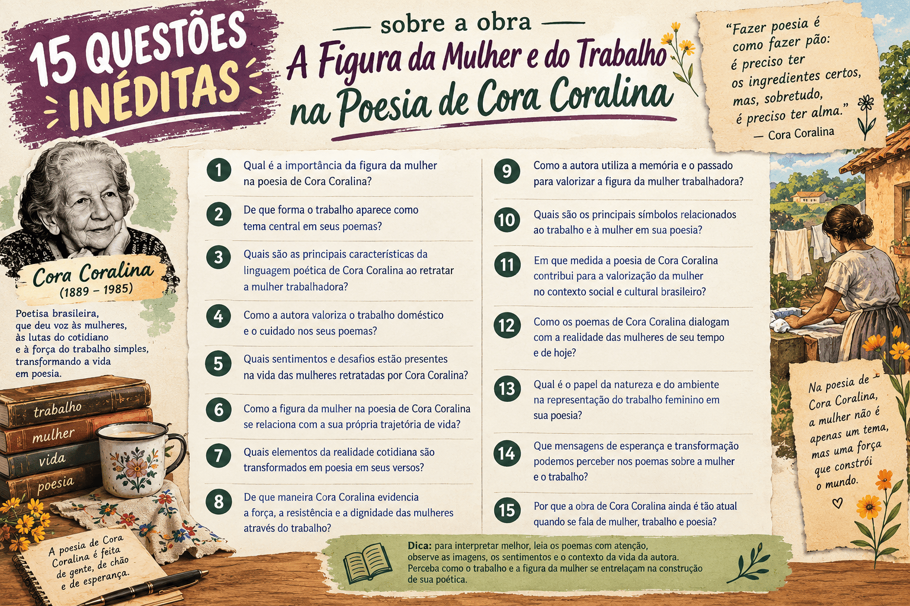

A Figura da Mulher e do Trabalho na Poesia de Cora Coralina
Meu Livro de Cordel (1976), uma das obras centrais da produção poética de Cora Coralina e leitura obrigatória do PAES UEMA 2027, articula um diálogo fecundo entre Literatura e Sociologia. Longe de enquadrar o universo sertanejo e provinciano em molduras idílicas ou folclóricas, a poeta goiana ergue sua voz lírica sobre o chão empírico do cotidiano, transformando a labuta árdua e as marcas corporais das camadas desfavorecidas em testemunho estético de alta voltagem humana.
No centro dessa arquitetura poética encontra-se a mulher na poesia de Cora Coralina, compreendida não sob a ótica do lirismo romântico tradicional ou do academicismo de gabinete, mas a partir do trabalho rural de Cora Coralina e da reprodução social da vida. Ao exaltar as lavadeiras de beira de rio, a força instintiva da mulher roceira, as mãos calejadas nas fornalhas e a dignidade do saber culinário das doceiras, o livro desconstrói convenções estéticas e formula uma severa crítica às hierarquias de gênero, raça e classe que estruturaram o interior brasileiro.
Neste artigo analítico, você explorará a profunda conexão entre lírica, divisão sexual do trabalho e memória social na obra, compreendendo as categorias sociológicas mais cobradas nos vestibulares da UEMA. Ao final, resolva um quiz inédito com 10 questões comentadas sobre a temática de Meu Livro de Cordel.

O que é a obra Meu Livro de Cordel?
Publicado originalmente quando a autora já ultrapassava as oito décadas de vida, Meu Livro de Cordel celebra a herança dos menestréis e cantadores anônimos do Nordeste — terra de seu pai — e as raízes profundas de Goiás Velho. A obra mescla versos livres, ritmos orais, autobiografia, crônica em verso e pequenas narrativas poéticas que dão visibilidade aos tipos marginalizados: a mulher da vida, o menino maltrapilho ("Dolor"), o meeiro ("Misticismos"), a ama de leite ex-escravizada ("Mãe Didi") e as operárias do lar e da roça.
Cora Coralina não se apropria do rótulo de cordel de maneira puramente formal ou métrica; ela adota o cordel em seu sentido sociológico e comunitário: uma arte acessível, desprovida de artifícios pomposos, que circula de mão em mão, atenta aos desvalidos e assentada na verdade crua da experiência popular.
Classificação e aspectos centrais da obra
- Autora: Cora Coralina (pseudônimo de Ana Lins dos Guimarães Peixoto Bretas, 1889–1985).
- Gênero: Poesia / Poema lírico-narrativo com matriz de oralidade e cordel.
- Contexto cultural: Modernismo tardio / Literatura regional de teor telúrico e memorialista.
- Espaço geográfico e simbólico: Goiás Velho (Rio Vermelho, Casa Velha da Ponte, Poço da Carioca), lavouras do interior e sertões.
- Voz lírica: Mulher idosa, trabalhadora, autodidata, telúrica, defensora da verdade poética e avessa à erudição pedante.
- Eixos temáticos primordiais: A ética do trabalho manual; a mulher trabalhadora e a divisão de gênero; a denúncia da miséria material; a rejeição à afetação parnasiana; a maternidade periférica e a ancestralidade negra.
Atenção ao perfil da UEMA: Cruzamento entre Literatura e Sociologia
O PAES UEMA não cobra a poesia de Cora Coralina de forma meramente conteudista ou biográfica. A banca privilegia a capacidade de o candidato identificar como a autora rompe com o bucolismo idílico, expõe o trabalho não pago ou precarizado da mulher e articula crítica social contra os preconceitos de classe, cor e instrução formal.
Entendendo os Eixos: Mulher, Trabalho e Sabedoria Popular
Para compreender como a temática de gênero e trabalho estrutura Meu Livro de Cordel, é fundamental dissecar os quatro poemas-chave em que essa tensão ganha maior densidade estética e sociológica.
1. A Ética do Trabalho Braçal: Estas Mãos
Na tradição lírica patriarcal, as mãos femininas costumam ser associadas à delicadeza alva, à languidez e ao uso de joias. Em Estas Mãos, Cora Coralina promove uma verdadeira revolução materialista do verso, cantando as mãos de mulher roceira que carregam o peso físico da sustentação doméstica:
A Recusa do Adorno Burguês
As mãos descritas rejeitam o supérfluo: são "pesadas, de falanges curtas, sem trato e sem carinho", mãos que jamais calçaram luvas e para as quais nunca houve anéis ou ostentação. A única aliança foi doada ao esforço cívico paulista de 1932.
A Consagração da Práxis Produtiva
As mãos são caracterizadas como "mãos cavouqueiras", "mãos alavancas" e "mãos doceiras". São instrumentos íntimos da economia básica do arroz, do feijão, do barreleiro, do sabão de cinzas e do tacho de cobre, definindo o trabalho manual como o verdadeiro sustentáculo da existência.
2. O Desnudamento da Pobreza Feminina: Vida das Lavadeiras
Em Vida das Lavadeiras, a poeta realiza uma ruptura epistemológica explícita com o lirismo contemplativo da poesia romântica ou parnasiana. Ao fitar as águas calmas da mata, ela interrompe o próprio verso para negar a fábula e exigir a crueza da realidade social:
- A fratura da ilusão: O verso "onde as iaras vêm dançar à noite... / Não. Mentira. / Façamos versos sem mentir" atua como manifesto estético e ético. A beleza cênica da natureza não pode ocultar a exploração humana que ali ocorre.
- A chefia monoparental e a precarização: O Poço da Carioca abriga "mulheres sem marido carregadas de necessidades, mães de muitos filhos largados pelo mundo". Trata-se da mulher proletária que arca solitariamente com os custos da reprodução familiar.
- A ausência de romantização do sofrimento: Essas lavadeiras "batem roupa nas pedras lavando a pobreza sem cantiga, sem toada, sem alegria". Cora recusa a visão folclorizada da lavadeira cantante, expondo o trabalho extenuante e desprovido de encanto como imposição da subsistência pura.
3. A Força Telúrica da Roça: O Cântico de Dorva
Em O Cântico de Dorva, a obra atinge uma voltagem corporal e expressionista singular ao retratar Dorvalina, moça de sítio que assume o trabalho doméstico e do eito após o falecimento da mãe:
- O corpo forjado pelo esforço: A fisionomia de Dorva afasta-se de qualquer idealização: tem "cabeça amarrada com lenço de chita", "braço grosso, mãos vermelhas", "perna grossa cabeluda" e "pé curto - descalço, esparramado fincado no chão". É a mulher moldada pelo solo agreste e pela tina de lavar roupa de homem.
- A energia sexual desreprimida: Ao largar a tina e penetrar no milharal atraída pelo assovio do macho, Dorva encarna a força genésica e reprodutiva da terra. Sua entrega instintiva no chão de palha e folhas desafia a moral asfixiante e hipócrita das cidades patriarcais.
4. A Doceira contra o Intelectualismo Estéril: Cora Coralina, Quem É Você?
Na segunda parte da coletânea, Cora Coralina assume em primeira pessoa sua condição social e artística em contraposição ao modelo letrado dominante:
- A primazia da culinária sobre o abstracionismo: Ao proclamar "Sou mais doceira e cozinheira do que escritora, sendo a culinária a mais nobre de todas as Artes: objetiva, concreta, jamais abstrata, a que está ligada à vida e à saúde humana", Cora inverte a hierarquia patriarcal ocidental que valoriza o intelecto masculino abstrato em detrimento do labor manual feminino.
- A denúncia dos preconceitos de época: A poeta revela ter sofrido a censura da família contra a mulher que escrevia ("Sempre houve na família [...] uma reserva determinada a essa minha tendência inata") e elenca os muros que precisou derrubar: "Preconceitos de classe. Preconceitos de cor e de família. Preconceitos econômicos. Férreos preconceitos sociais".
Glossário Temático e Sociológico de Meu Livro de Cordel
- Mãos Cavouqueiras: Expressão que associa as mãos da mulher ao ofício dos cavouqueiros (que quebram e removem pedras), simbolizando a luta corporal contínua contra os obstáculos e agruras materiais da existência.
- Tacho de Cobre: Símbolo central da alquimia doméstica da doceira tradicional goiana; representa a transformação do fruto da terra em sustento, independência financeira e memória cultural.
- Barreleiro: Recipiente tradicional em que se filtra a lixívia (água com cinza de fornalha) para a fabricação artesanal do sabão caseiro; signo da autossuficiência e da economia doméstica das mulheres do campo.
- Versos Sem Mentir: Postura ético-estética de Cora Coralina que recusa as figuras míticas ornamentais (como ninfas e iaras) para retratar a condição de penúria das lavadeiras reais.
- Mãe Didi: Figura histórica e memorial da ex-escravizada que amamentou a autora; personifica a maternidade vicária, o afeto protetor e a matriz negra que sustentou a infância desprovida de calor no lar tradicional.
Estratégia de Resolução para o Vestibular
Nas questões da UEMA, não interprete os poemas de Cora Coralina apenas como memórias nostálgicas da velhice. A poesia da autora constitui um libelo sociológico: atente para como ela associa a mulher pobre às forças regeneradoras da terra, confrontando o formalismo erudito com a autoridade existencial de quem viveu da enxada, da tina e do tacho.
Quiz sobre a Mulher e o Trabalho em Cora Coralina
Quiz — Mulher e Trabalho em Meu Livro de Cordel para o PAES UEMA
Questão 1 — No poema Estas Mãos, Cora Coralina exalta suas "esforçadas mãos cavouqueiras", que varreram, lavaram, cozinharam e mexeram o tacho de cobre. Do ponto de vista sociológico e literário, essa representação constrói:
Questão 2 — No célebre poema Vida das Lavadeiras, o eu lírico interrompe o fluxo imagético ao declarar: "Sombra da mata / sobre as águas quietas onde as iaras / vêm dançar à noite... / Não. Mentira. / Façamos versos sem mentir." O sentido dessa recusa explícita reside em:
Questão 3 — Ainda em Vida das Lavadeiras, as trabalhadoras do Poço da Carioca são descritas como "mulheres sem marido / carregadas de necessidades, / mães de muitos filhos largados pelo mundo / batem roupa nas pedras / lavando a pobreza sem cantiga, sem toada, sem alegria". Esse excerto denuncia:
Questão 4 — Em O Cântico de Dorva, a descrição corporal de Dorvalina ("Braço grosso, mãos vermelhas. / Perna grossa cabeluda. / Dorva de pé no chão: pé curto - descalço, / esparramado fincado no chão") produz como efeito expressivo:
Questão 5 — No texto confessional Cora Coralina, Quem É Você?, a poeta afirma categoricamente: "Sou mais doceira e cozinheira do que escritora, sendo a culinária a mais nobre de todas as Artes: objetiva, concreta, jamais abstrata, a que está ligada à vida e à saúde humana." Essa proposição fundamenta:
Questão 6 — Ao evocar em Meu Livro de Cordel os "Férreos preconceitos sociais / Preconceitos de classe / Preconceitos de cor e de família" que marcaram sua formação, a voz lírica:
Questão 7 — No comovente tributo prestado no poema Mãe Didi, a narradora evoca a ex-escravizada que a amamentou e aconchegou na infância: "Toda a melhor lembrança da minha puerícia distante / está ligada a essa antiga escrava. / No tarde da minha vida assento o seu nome / na pedra rude do meu verso". Sob o prisma interseccional, o texto:
Questão 8 — Em Cantoria, que abre a primeira parte da obra, o eu lírico enumera os sujeitos de seu canto: "Canto as pedras, canto as águas, as lavadeiras, também. / Cantei a casinha velha de velha pobrezinha [...] Cantei mulher da vida conformando a vida dela." Essa opção temática demonstra que a lírica de Cora Coralina:
Questão 9 — Em Meu Livro de Cordel, o ofício de fazer doces (cristalizados, em calda, passas) e a feitura poética aproximam-se metalinguisticamente porque ambos:
Questão 10 — Considere as seguintes asserções sobre a relação entre o feminino, a terra e a linguagem em Meu Livro de Cordel:
I. A mulher é associada simbolicamente à terra como espaço de fertilidade, gestação e plantio, superando a visão da passividade decorativa.
II. O poema Estas Mãos celebra as marcas do trabalho braçal e rejeita enfaticamente os adornos e privilégios da classe ociosa.
III. A poesia de Cora Coralina alinha-se ao determinismo mecanicista, afirmando que a mulher pobre do campo é desprovida de qualquer capacidade criativa ou afetiva.
IV. Em Vida das Lavadeiras, a voz lírica denuncia a dureza da rotina no lajedo, desfazendo a ilusão pastoral com o brado "Façamos versos sem mentir".
Está correto o que se afirma em:
Resumo para revisão
- Meu Livro de Cordel cruza Literatura e Sociologia ao tomar o cotidiano e o labor do povo simples como matéria lírica essencial.
- Em Estas Mãos, a mulher trabalhadora é retratada através de suas marcas corporais (falanges curtas, ossudas), valorizando o trabalho doméstico e produtivo.
- Em Vida das Lavadeiras, Cora renega o lirismo mitológico (as iaras) pelo compromisso com a verdade social (as mães solo lavando a pobreza sem alegria).
- Em O Cântico de Dorva, a moça da roça personifica a simbiose entre o corpo moldado pelo eito e a sexualidade instintiva ligada à terra fértil.
- A condição de doceira é reivindicada como arte nobre e concreta, contestando a superioridade do academicismo abstrato dominado historicamente pelos homens.
- O poema Mãe Didi recupera a dignidade da mulher negra e escravizada como esteio afetivo e iniciadora da imaginação poética no Brasil patriarcal.
Conclusão
A poesia de Cora Coralina em Meu Livro de Cordel constitui um monumento imperecível à dignidade humana forjada no trabalho. Longe de limitar-se a uma voz folclórica ou ingênua, a escritora goiana articula uma aguçada consciência sociológica sobre os entraves e a força das mulheres que mantêm de pé as estruturas materiais e afetivas do Brasil profundo.
Para o candidato que se prepara para o PAES UEMA, a leitura atenta desses poemas oferece um instrumental crítico poderoso: demonstra como a literatura regional pode articular categorias sociológicas de gênero, raça e classe com rigor estético, transformando as mãos calejadas da doceira e da lavadeira em símbolos universais de resistência e emancipação humana.
Perguntas frequentes
Por que Cora Coralina se afirmava mais doceira do que escritora?
Trata-se de uma afirmação política e estética consciente. Cora valorizava o saber prático e concreto que sustenta diretamente a vida humana (a culinária) em oposição ao saber puramente abstrato, teórico e erudito, historicamente controlado pelas elites patriarcais.
O que significa o verso "Façamos versos sem mentir" em Vida das Lavadeiras?
Expressa o rompimento ético com o bucolismo e a idealização artística. A poeta recusa mascarar a miséria e a exaustão das lavadeiras pobres do Poço da Carioca por meio de alegorias mitológicas açucaradas como as iaras da beira do rio.
Como a temática do trabalho se relaciona com a biografia da autora?
Cora Coralina trabalhou desde a juventude na terra, nos afazeres caseiros e na produção de doces cristalizados na secular Casa Velha da Ponte, em Goiás. O trabalho manual para ela não era teoria livresca, mas a experiência material concreta que garantiu sua sobrevivência e independência.
Qual a relevância sociológica do poema Mãe Didi?
O poema expõe as tensões raciais do pós-abolição, demonstrando que, enquanto a família patriarcal branca era fria e repressora, o afeto protetor, o calor humano e as narrativas orais míticas foram ofertados generosamente por uma mulher negra ex-escravizada.
Conteúdos relacionados
- Análise Completa de Meu Livro de Cordel para o PAES UEMA 2027
- Cora Coralina: Biografia, Obras, Meu Livro de Cordel e Importância Literária
- Crônicas de Lucy Teixeira: Análise Completa para o PAES UEMA 2027
- O Determinismo e o Neorrealismo na Obra Infância de Graciliano Ramos
- Intertextualidade no PAES UEMA: Diálogo entre Meu Livro de Cordel e Outras Obras
- Variações Linguísticas: Análise de Infância e Meu Livro de Cordel
- Interpretação de Texto no PAES UEMA 2027: Estratégias e Habilidades da Banca
- PAES UEMA 2027: Guia de Estudos, Conteúdos, Obras e Redação
- PAES UEMA: Índice de Conteúdos, Simulados e Obras Obrigatórias (Página 2)
Referências
- CORALINA, Cora. Meu Livro de Cordel. 11. ed. São Paulo: Global Editora, 2002.
- BOSI, Alfredo. História Concisa da Literatura Brasileira. São Paulo: Cultrix, 2017.
- CANDIDO, Antonio. Literatura e Sociedade. Rio de Janeiro: Ouro sobre Azul, 2006.
- UNIVERSIDADE ESTADUAL DO MARANHÃO (UEMA). Edital e Comunicado Oficial sobre as Obras Literárias Obrigatórias — PAES UEMA 2027. São Luís: UEMA, 2026.
Explore Outros Conteúdos
Continue seus estudos acessando outras seções do site Mestre Kira: